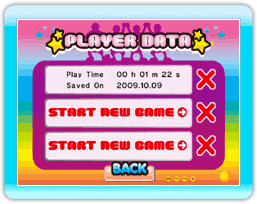

10 |
Getting Started |
 |
 Align the cursor above one of the headings below and select it by pressing the A Button.
Align the cursor above one of the headings below and select it by pressing the A Button.
PLAYER DATA Screen  Select 'START NEW GAME' when playing for the first time. The game's introduction will then begin. If there is saved data, you can press the A Button on it to continue a previous game. To erase save data, press the red 'X' on the right. * Your progress is saved automatically after you clear a stage. Introduction Screen When playing for the first time you will be introduced to the characters and the game's setting. After that, align the cursor above one of the following items and select it by pressing the A Button.  1: Monitor
1: MonitorProceeds to the Stage Select screen. 2: UFO Door Returns to the title screen. |
 |
 |
 |